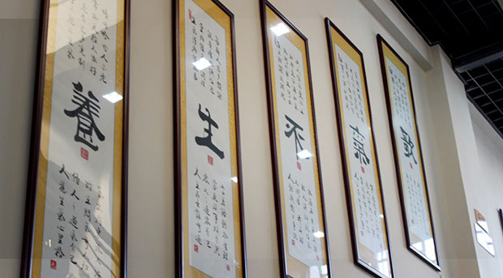

石应轩中医脉诊
国医大师石应轩主讲中医脉诊
共99条评论
 石应轩
石应轩
石应轩中医脉诊
国医大师石应轩主讲中医脉诊
石应轩
脉诊是通过按触人体不同部位的脉搏，以体察脉象变化的切诊方法。又称切脉、诊脉、按脉、持脉。脉象的形成与脏腑气血密切相关，若脏腑气血发生病变，血脉运行就会受到影响，脉象就有变化。
脉诊在临床上，可推断疾病的进退预后。临床上主要掌握脉诊的时间、病人的体位，医生的指法和指力轻重，每次按脉时间，以每侧脉搏跳动不少于50次为限，同时要了解健康人脉象的变化情况，才能正确地进行脉诊。我国古代医学在诊断疾病方面采用的脉诊，是一项独特诊法脉，是中医“四诊”（望、闻、问、切）之一，也是辨证论治的一种不可少的客观依据。
姚春龄，毕业于河北医科大学，从医40余年，曾任北京市广外医院院长，北京市回民医院院长，现任北京同仁堂王府井中医医院特聘医学顾问。师从全国著名老中医，原中国中医院研究院副院长赵金铎。熟练运用中医基础理论和中医病机学说，力倡中西医结合，强调中医整体观念和辨证论治。
姚春龄老师的课，解读通透，我非常喜欢，不愧是名医。一直在努力，从未放弃
姚春龄老师的课，解读通透，我非常喜欢，不愧是名医。一直在努力，从未放弃
姚春龄老师的课，解读通透，我非常喜欢，不愧是名医。一直在努力，从未放弃
辣椒小姐：姚春龄老师的课，解读通透，我非常喜欢，不是名医。一直在努力，从未放弃